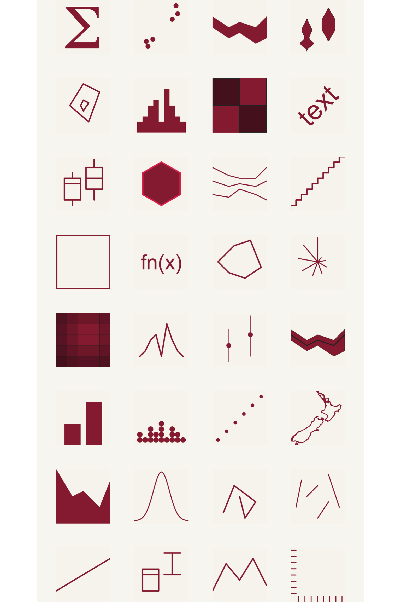

ggplot2 wrapped 2025
ggplot wrapped 2025
Build your own!
Build your own by following code
Shout out to geom_point - your most used geom in 2025!
Yikes! There are so many different ways to look at how your geoms were used across your shining data visualisations. Maybe the easiest way is a part-to-whole story?
Looking at your top 4 geoms and lumping everything else together…
No surprises but your most used geom was also the geom that appeared in the most distinct files
This Venn Diagram shows your top 3 most used geoms and how often you used them in the same code files
That’s kind of interesting!
But wait! You used an hunky-dory 24 unique geoms - a Venn Diagram of that size would be a mess!
That’s because we’re not really making a straigh forward plot or chart - we’re visualising a graph! In graphs we are interested in the relationships and connections between things. You might be familiar with hairball-looking graph visualisations - which are just as difficult to extract meaning from as a Venn Diagram.
So, let’s use an UpSet Chart to look at your most inter-connected geoms in 2025
Please move your cursor over the chart below - it’s very interactive.
We’ve thrown away some of your data to make this readable. Geoms only appear if they occur more than 10 times in your data and an interaction has to occur more than onc
Oh, wow! Tell me more about UpSet Charts
It’s more than likely you’ve not seen many (or any!) UpSet Charts before. They were only invented in 2012, and the authors quite rightly ask for the original paper to be cited whenever they’re used.
Alexander Lex, Nils Gehlenborg, Hendrik Strobelt, Romain Vuillemot, Hanspeter Pfister. UpSet: Visualization of Intersecting Sets IEEE Transactions on Visualization and Computer Graphics (InfoVis), 20(12): 1983–1992, doi:10.1109/TVCG.2014.2346248, 2014.
On to more fun things!
Just like all your data visualisations are different, your geom calls varied a lot!
You might have noticed that’s not all your geoms 👀
That’s because 23% of the time you used geoms with zero arguments!
We’re coming to the end of the report…
Here are some final statistics:
Your longest single geom call was a praiseworthy total of 960 characters long. It was geom_textbox from the ggtext.
Your geom with the most geoms was different! It was geom_label_repel with a total of <b>15 arguments</b>.
There’s a lot more you can do with the package but we’ll sign off with what you were probably expecting and we’d hate to let you down: